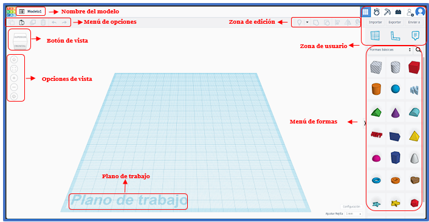

Después de aprender a crear tu cuenta de Tinkercad y hacer tu primer proyecto, ahora vamos a explorar cómo funciona la interfaz de Diseño 3D. Veremos desde las opciones más sencillas con figuras, hasta las diferentes operaciones que puedes realizar con ellas. Echa un vistazo a la siguiente ilustración para más información:

Partes de la Interfaz de Diseño 3D
- Nombre del Modelo: Aquí puedes ver y cambiar el nombre de tu proyecto.
- Menú de Opciones: Este menú te permite copiar, pegar y eliminar figuras, así como deshacer cambios y volver a un modelo anterior.
- Botón de Vista: Este botón te permite moverte por todo el plano de trabajo.
- Opciones de Vista: Aquí puedes acercar y alejar la vista, además de regresar a una vista inicial.
- Zona de Edición: En esta área puedes realizar diferentes operaciones con las figuras, como agrupar, desagrupar, alinear y acoplar.
- Zona de Usuario: Permite exportar o importar modelos y dejar comentarios en el plano de trabajo.
- Menú de Formas: Aquí encontrarás todas las figuras que puedes usar en Tinkercad.
- Plano de Trabajo: Este es el área donde colocarás todas las figuras que elijas para tu diseño.